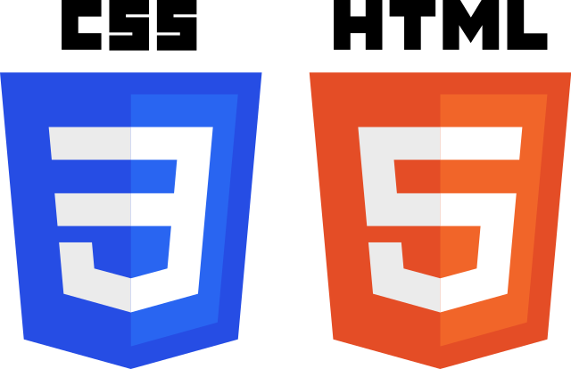

- 2 years Intermediate

- 2 years Intermediate

- 1 year Intermediate

- 1 year Intermediate
Professional Projects
- Data Analysis & Visualization: Extensive experience in descriptive, bivariate, and multivariate analysis. Skilled in crafting high-quality graphics with R, especially using ggplot2, leveraging register data for insights.
- Shiny App Development: Successfully developed a Shiny App integrated with an SQLite server, offering users interactive data visualization and analysis capabilities.
- Work Experience: Contributed to projects at the Cantonal Social Welfare Office in Zurich, performing in-depth data analyses and visualizations.
- React Application Development: Proficient in building responsive and interactive web applications using React, including the implementation of state management, routing, and component-based architecture for seamless user experiences.
- Express.js: Skilled in creating robust backend APIs and web servers using Express.js, enabling efficient communication between the frontend and backend of web applications.
- PostgreSQL Database: Experienced in designing and managing relational databases with PostgreSQL, including data modeling, querying, and optimization for data-driven applications.
- Node.js: Proficient in utilizing Node.js for server-side scripting and backend development, enabling the creation of scalable and high-performance web applications.
Personal Projects
- Portfolio-Project Codecademy: Rock Paper Scissors x 99
- Portfolio-Project Codecademy: Simple Rock Paper Scissors
- Portfolio-Project Codecademy: Showcase Design 1
- Portfolio-Project Codecademy: Showcase Design 2
- Portfolio-Project Codecademy: Showcase Design 3
- YELP API Portfolio-Project: Gleipnir
- Spotify API Portfolio-Project: Jammming App
- Swiss Artist Web-Project: Art by Trix
- Swiss Artist Web-Project: Nikita
- ML Project - Kaggle: Survival Predictor
- ML Project - Spotify: Song Recommender